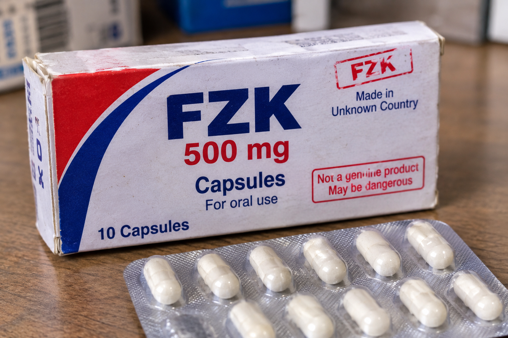

who we are
We are a company that aims to ensure customers use reliable medicines. That's why we help users assess the reliability of the medicines or pills they buy.

why to use this web site
Accessing safe medications can sometimes be difficult. It is not always easy to verify the reliability of a medicine; failing to do so can expose one to various dangers. For this reason, we have decided to develop a website that allows users to check whether a product is counterfeit. This site draws on data from the Pharmacy and Poisons Board (PPB).
how to use this website
Access the Scan Tab
Navigate to the Scan tab on the website to access the medication verification feature.
: Enter the Medication Code
Enter the QR code or the relevant product code displayed on the medication packaging in the provided input field. Ensure that the code is entered correctly to avoid errors during verification
Submit the Code for Verification
Click the Verify Medication button to submit the code. The system will search its database for matching medication records.
Once the verification process is complete, the website will display the available information about the medication, including
- Medication name and description.
- Manufacturer details.
- Product registration status.
- Batch number and expiry date.
- Any available recalls or safety alerts.